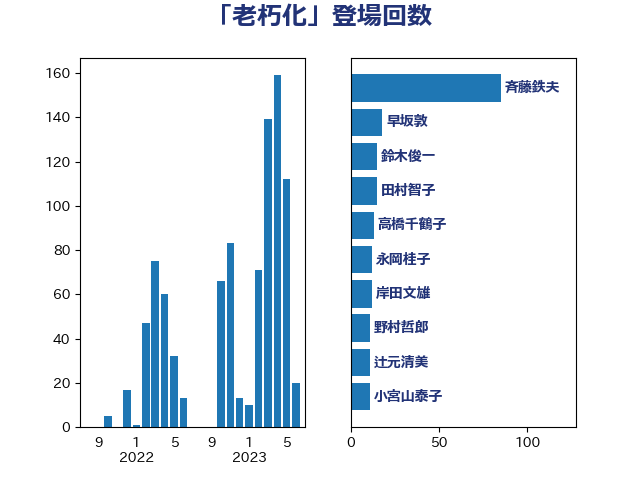

単語「老朽化」

| 赤羽一嘉 | 公明党 | 47 回 |
| 西田実仁 | 公明党 | 26 回 |
| 斉藤鉄夫 | 公明党 | 15 回 |
| 城井崇 | 立憲民主党 | 7 回 |
| 大口善徳 | 公明党 | 7 回 |
| 浜口誠 | 国民民主党 | 7 回 |
| 菊田真紀子 | 立憲民主党 | 7 回 |
| 足立敏之 | 自由民主党 | 7 回 |
| 古川禎久 | 自由民主党 | 6 回 |
| 末松信介 | 自由民主党 | 6 回 |
| 秋野公造 | 公明党 | 6 回 |
| 里見隆治 | 公明党 | 6 回 |
| 高橋千鶴子 | 日本共産党 | 6 回 |
| 河野義博 | 公明党 | 5 回 |
| 浮島智子 | 公明党 | 5 回 |
| 熊谷裕人 | 立憲民主党 | 5 回 |
| 豊田俊郎 | 自由民主党 | 5 回 |
| 上川陽子 | 自由民主党 | 4 回 |
| 伊波洋一 | 無所属 | 4 回 |
| 小宮山泰子 | 立憲民主党 | 4 回 |
| 平口洋 | 自由民主党 | 4 回 |
| 武井俊輔 | 自由民主党 | 4 回 |
| 江島潔 | 自由民主党 | 4 回 |
| 湯原俊二 | 立憲民主党 | 4 回 |
| 稲津久 | 公明党 | 4 回 |
| 羽田次郎 | 立憲民主党 | 4 回 |
| 鈴木俊一 | 自由民主党 | 4 回 |
| 青木愛 | 立憲民主党 | 4 回 |
| 三浦信祐 | 公明党 | 3 回 |
| 中野洋昌 | 公明党 | 3 回 |
| 伊藤岳 | 日本共産党 | 3 回 |
| 宮本徹 | 日本共産党 | 3 回 |
| 小泉進次郎 | 自由民主党 | 3 回 |
| 岬麻紀 | 日本維新の会 | 3 回 |
| 岸田文雄 | 自由民主党 | 3 回 |
| 後藤茂之 | 自由民主党 | 3 回 |
| 武部新 | 自由民主党 | 3 回 |
| 田村貴昭 | 日本共産党 | 3 回 |
| 石井啓一 | 公明党 | 3 回 |
| 竹内真二 | 公明党 | 3 回 |
| 芳賀道也 | 国民民主党 | 3 回 |
| 菅義偉 | 自由民主党 | 3 回 |
| 萩生田光一 | 自由民主党 | 3 回 |
| 金城泰邦 | 公明党 | 3 回 |
| 鈴木義弘 | 国民民主党 | 3 回 |
| 長友慎治 | 国民民主党 | 3 回 |
| 中西祐介 | 自由民主党 | 2 回 |
| 中野英幸 | 自由民主党 | 2 回 |
| 堂故茂 | 自由民主党 | 2 回 |
| 塩田博昭 | 公明党 | 2 回 |
| 大西英男 | 自由民主党 | 2 回 |
| 大野泰正 | 自由民主党 | 2 回 |
| 室井邦彦 | 日本維新の会 | 2 回 |
| 山口那津男 | 公明党 | 2 回 |
| 山谷えり子 | 自由民主党 | 2 回 |
| 岸信夫 | 自由民主党 | 2 回 |
| 徳永エリ | 立憲民主党 | 2 回 |
| 朝日健太郎 | 自由民主党 | 2 回 |
| 本村伸子 | 日本共産党 | 2 回 |
| 杉久武 | 公明党 | 2 回 |
| 松沢成文 | 日本維新の会 | 2 回 |
| 根本幸典 | 自由民主党 | 2 回 |
| 池田佳隆 | 自由民主党 | 2 回 |
| 渡辺猛之 | 自由民主党 | 2 回 |
| 石原正敬 | 自由民主党 | 2 回 |
| 石川博崇 | 公明党 | 2 回 |
| 金子恭之 | 自由民主党 | 2 回 |
| 青山大人 | 立憲民主党 | 2 回 |
| 馬淵澄夫 | 立憲民主党 | 2 回 |
| 高橋光男 | 公明党 | 2 回 |
| こやり隆史 | 自由民主党 | 1 回 |
| たがや亮 | れいわ新選組 | 1 回 |
| 中司宏 | 日本維新の会 | 1 回 |
| 中山展宏 | 自由民主党 | 1 回 |
| 中川郁子 | 自由民主党 | 1 回 |
| 井上信治 | 自由民主党 | 1 回 |
| 伊東信久 | 日本維新の会 | 1 回 |
| 伊藤俊輔 | 立憲民主党 | 1 回 |
| 加田裕之 | 自由民主党 | 1 回 |
| 加藤鮎子 | 自由民主党 | 1 回 |
| 古川康 | 自由民主党 | 1 回 |
| 吉田宣弘 | 公明党 | 1 回 |
| 吉田忠智 | 立憲民主党 | 1 回 |
| 国光あやの | 自由民主党 | 1 回 |
| 堀井学 | 自由民主党 | 1 回 |
| 堤かなめ | 立憲民主党 | 1 回 |
| 塩村あやか | 立憲民主党 | 1 回 |
| 大島敦 | 立憲民主党 | 1 回 |
| 大西健介 | 立憲民主党 | 1 回 |
| 守島正 | 日本維新の会 | 1 回 |
| 安江伸夫 | 公明党 | 1 回 |
| 宗清皇一 | 自由民主党 | 1 回 |
| 宮本周司 | 自由民主党 | 1 回 |
| 山崎誠 | 立憲民主党 | 1 回 |
| 山本剛正 | 日本維新の会 | 1 回 |
| 山田賢司 | 自由民主党 | 1 回 |
| 岡本三成 | 公明党 | 1 回 |
| 岩本剛人 | 自由民主党 | 1 回 |
| 岩渕友 | 日本共産党 | 1 回 |
| 岩谷良平 | 日本維新の会 | 1 回 |
| 岸真紀子 | 立憲民主党 | 1 回 |
| 川崎ひでと | 自由民主党 | 1 回 |
| 平将明 | 自由民主党 | 1 回 |
| 日下正喜 | 公明党 | 1 回 |
| 木村英子 | れいわ新選組 | 1 回 |
| 杉本和巳 | 日本維新の会 | 1 回 |
| 東徹 | 日本維新の会 | 1 回 |
| 松山政司 | 自由民主党 | 1 回 |
| 枝野幸男 | 立憲民主党 | 1 回 |
| 柳本顕 | 自由民主党 | 1 回 |
| 森屋隆 | 立憲民主党 | 1 回 |
| 横山信一 | 公明党 | 1 回 |
| 河西宏一 | 公明党 | 1 回 |
| 浜地雅一 | 公明党 | 1 回 |
| 浜野喜史 | 国民民主党 | 1 回 |
| 熊野正士 | 公明党 | 1 回 |
| 田名部匡代 | 立憲民主党 | 1 回 |
| 田村まみ | 国民民主党 | 1 回 |
| 田畑裕明 | 自由民主党 | 1 回 |
| 石井章 | 日本維新の会 | 1 回 |
| 石井苗子 | 日本維新の会 | 1 回 |
| 笹川博義 | 自由民主党 | 1 回 |
| 細田健一 | 自由民主党 | 1 回 |
| 舞立昇治 | 自由民主党 | 1 回 |
| 舟山康江 | 国民民主党 | 1 回 |
| 落合貴之 | 立憲民主党 | 1 回 |
| 西銘恒三郎 | 自由民主党 | 1 回 |
| 赤嶺政賢 | 日本共産党 | 1 回 |
| 輿水恵一 | 公明党 | 1 回 |
| 道下大樹 | 立憲民主党 | 1 回 |
| 野田聖子 | 自由民主党 | 1 回 |
| 野間健 | 立憲民主党 | 1 回 |
| 金子俊平 | 自由民主党 | 1 回 |
| 鈴木英敬 | 自由民主党 | 1 回 |
| 長浜博行 | 無所属 | 1 回 |
| 阿部弘樹 | 日本維新の会 | 1 回 |
| 阿部知子 | 立憲民主党 | 1 回 |
| 音喜多駿 | 日本維新の会 | 1 回 |
| 高橋英明 | 日本維新の会 | 1 回 |
| 麻生太郎 | 自由民主党 | 1 回 |